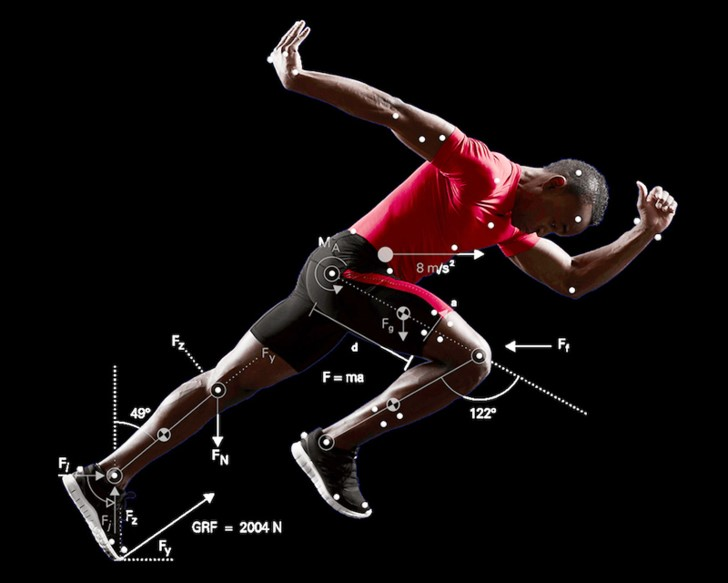

Que vous soyez sportif amateur, pratiquant régulier ou athlète en quête de performance, les contraintes musculaires, articulaires et tendineuses nécessitent une prise en charge spécifique. L'objectif de la kinésithérapie du sport est de vous accompagner de la blessure aiguë jusqu'au retour complet à votre discipline (Return to Play).

Gestion de la charge de travail : la clé de la récupération
La majorité des blessures de surutilisation (tendinopathies, syndromes d'essuie-glace, périostites) ne surviennent pas par hasard : elles résultent d'un déséquilibre entre la **capacité de charge** d'un tissu et la **charge d'entraînement subie**. Reposer complètement un tissu blessé diminue sa tolérance à l'effort ; l'enjeu est donc de doser précisément la contrainte mécanique pour stimuler la guérison sans dépasser le seuil de tolérance.
Pourquoi le repos strict est souvent contre-productif
Pendant longtemps, le réflexe face à une douleur sportive a été l'arrêt complet de l'activité. Or, les tissus musculo-squelettiques (tendons, cartilages, muscles) ont besoin de contraintes mécaniques dosées pour se régénérer et conserver leur résistance.
Au cabinet, nous appliquons les principes de la **mécanotransduction** : réintroduire la charge progressivement pour renforcer les structures en toute sécurité.
Les grands piliers de la prise en charge au cabinet
L'accompagnement du sportif au sein du cabinet Alpes Kiné Mouv' repose sur une démarche active et mesurée sur le plateau technique :
- Évaluation initiale & bilan diagnostique : identifier le tissu atteint, évaluer les amplitudes, la force musculaire, le contrôle moteur et la tolérance à la charge.
- Prise en charge des tendinopathies : application de protocoles d'exercices progressifs (isométrie, renforcement lourd et lent / HSR, pliométrie) adaptés au stade de la lésion.
- Rééducation des traumatismes : entorses (LCA, cheville), lésions musculaires (ischio-jambiers, mollet), luxations et soins post-opératoires.
- Réathlétisation & Return to Sport (RTS) : tests fonctionnels objectifs (tests de saut, ratio de force) avant la reprise des entraînements et de la compétition.
Focus sur les tendinopathies
Les douleurs du tendon (Achille, rotulien, moyen fessier, épicondylite) constituent un motif très fréquent de consultation. La vision médicale des tendinopathies a profondément évolué ces dernières années, délaissant le concept d'« inflammation » pure au profit d'un modèle de réorganisation tissulaire sous charge.
Pour comprendre cette évolution scientifique et découvrir les protocoles de renforcement actuels, lisez notre article dédié : L'évolution de la prise en charge des tendinopathies : du repos au renforcement actif.
Questions fréquentes
Dois-je arrêter totalement le sport en cas de tendinopathie ?
Non, dans la grande majorité des cas, un arrêt complet est déconseillé. Une activité adaptée respectant un niveau de douleur tolérable (souvent ≤ 3/10) permet de maintenir la capacité du tendon sans aggraver la lésion.
Quand puis-je reprendre la compétition après une blessure ?
La reprise ne se fait pas au terme d'un délai fixe sur le calendrier, mais lorsque vous validez des critères fonctionnels objectifs (force, absence d'inhibition, tests de saut et de vitesse spécifiques à votre sport).
Références scientifiques & Littérature
- Soligard T, Schwellnus M, Alonso JM, et al. How much is too much? (Part 1) International Olympic Committee consensus statement on load in sport and risk of injury. British Journal of Sports Medicine (BJSM), 2016; 50(17):1030-1041.
- Dye SF. The pathophysiology of patellofemoral pain: a tissue homeostasis perspective. Clinical Orthopaedics and Related Research, 2005; 436:100-110.
- Ardern CL, Bizzini M, Bencke J, et al. 2016 Consensus statement on return to sport from the First World Congress in Sports Physical Therapy, Bern. British Journal of Sports Medicine (BJSM), 2016; 50(14):853-864.